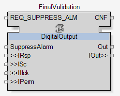
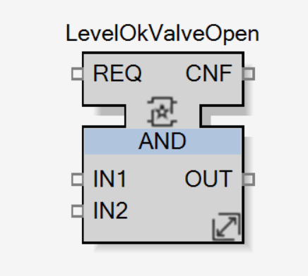
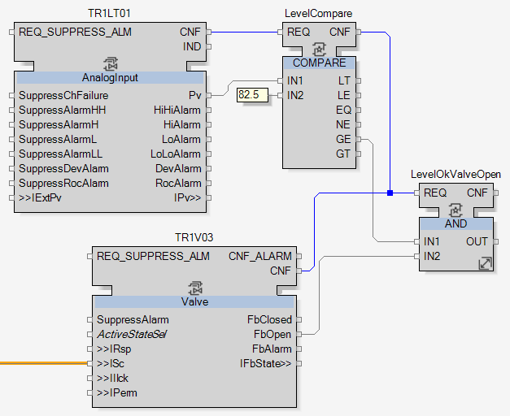
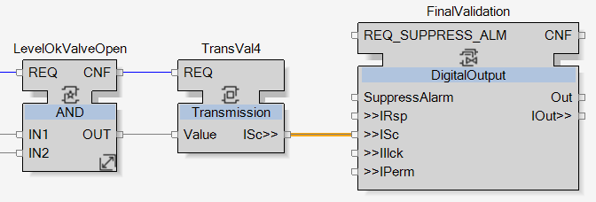
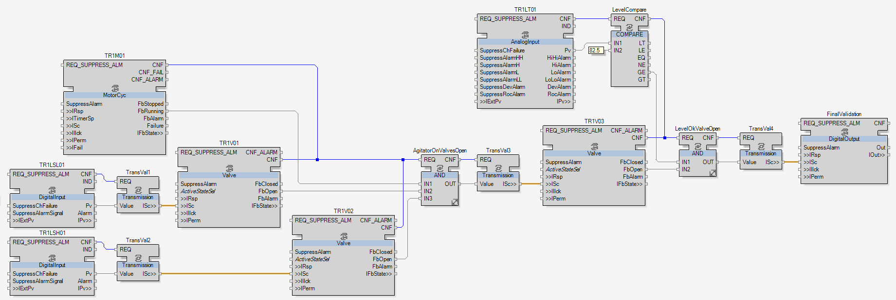

Turning 'ON' the Digital Output
As required in the topic Purpose of the Connections, a digital output must be turned ‘ON’:
-
When the process value of TR1LT01 is greater than or equal to the constant.
and
-
When the Open feedback of TR1V03 is ‘TRUE’.
To turn ‘ON’ the digital output:
-
Add a digital output and name it FinalValidation.

-
Get its command by adding a AND logical function block and rename it LevelOkValveOpen.


NOTE: As there are only two conditions, the number of inputs doesn’t need to be changed.
-
Link the function blocks as followed to match the logic condition:
-
LevelCompare.GE to LevelOkValveOpen.IN1
-
TR1V03.FbOpen to LevelOkValveOpen.IN2
-
LevelCompare.CNF to LevelOkValveOpen.REQ
-
TR1V03.CNF to LevelOkValveOpen.REQ

-
-
Finally, transmit the output value of LevelOkValveOpen to FinalValidation by adding a transmission composite and name it TransVal4. Link it as usual.


|
At this stage, all the interactions have been completely developed.
The application is now ready to be simulated. |
